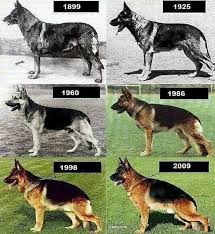

Dogs Evolutions
Dogs evoled from grey wolves which was over 20,000 years ago. It took the grey wolves about 12,000 years to evolve into dogs.
Dogs were the first ever animal humans have ever tamed and it happend at least 15,000 years ago.

Dogs in Anceint Egypt
Ancient Egyptians enjoyed companionship offered by dogs and were sometimes mummified and buried with their masters.
Dogs most popular in Ancient egypt were greyhounds, salukis, and possibly even Mastiff and dachshunds. Dogs were
equally loved and praised in ancient egypt. Dogs in history were served the role to gaurd, and gaurding.

Fun Dog Facts About History
- The ancient Egyptians saw dogs as god-like
- The first ever dog to be born was a Bonn-Oberkassel
- Dogs Evlove from grey wolves
- Canines represented death and teh after life
- Anubis has been identified varously as a wild dog
Dogs or cats Ancient Egypt
Dogs in ancinet egypt are well known and were used for many things
Cats in Anceint Egypt are served as an everdya reminder of the power of the gods
Cats were the most popular in ancinet egypt becasue they represented divinity, health, wealth, family, protection, and good fortune